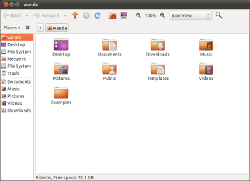

Datoteke, mape in iskanje

Ustvarjanje varnostnih kopij
Triki in vprašanja
Nadaljnje branje
Več podrobnosti
- Datoteke in mape
- Namizni vodnik Ubuntu — Namizni vodnik Ubuntu
Material v tem dokumentu je na voljo pod prosto licenco. To je prevod dokumentacije Ubuntu, ki jo je sestavila Ubuntu dokumentacijska ekpa za Ubuntu. V slovenščino jo je prevedla skupina Ubuntu prevajalcev. Za poročanje napak v prevodih v tej dokumentaciji ali Ubuntuju pošljite sporočilo na dopisni seznam.